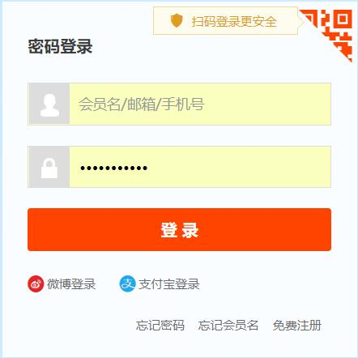
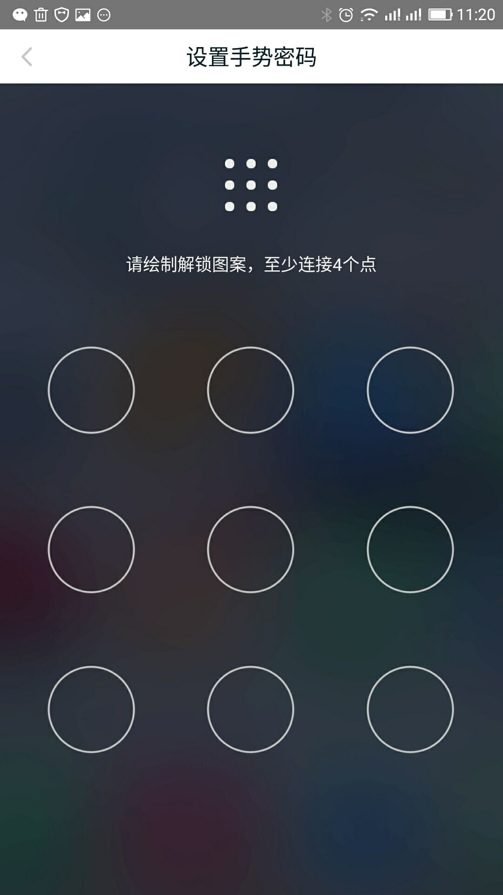
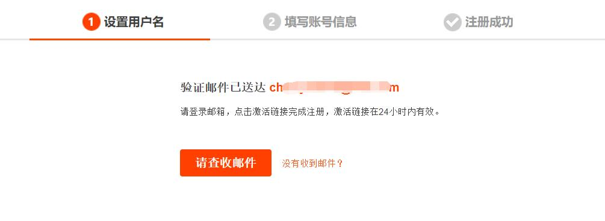
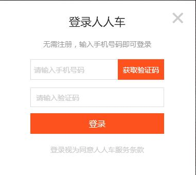
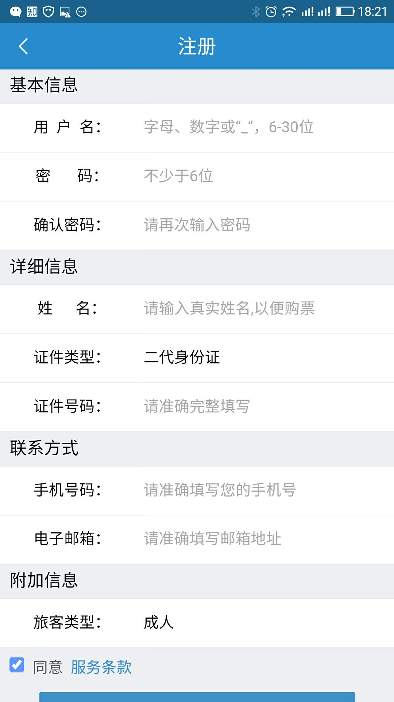
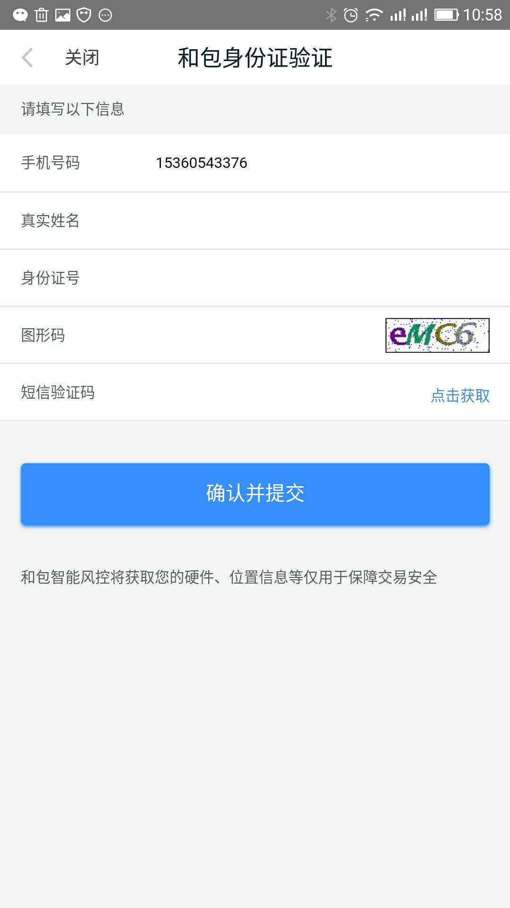
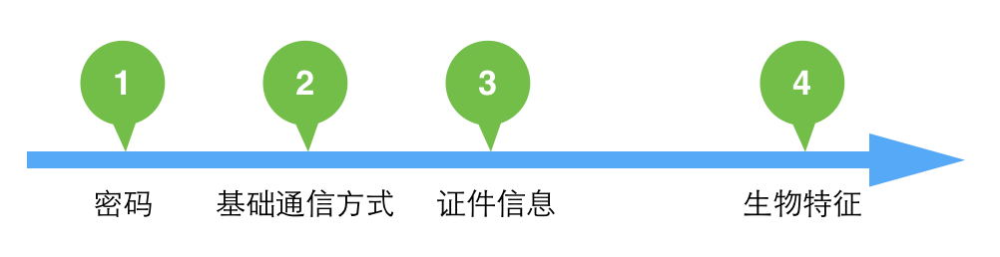

不同类型产品如何设计登录注册模块
小课堂【深圳修真院】
分享人：梁樱桃
目录
一、为什么要设计登录注册模块？最重要的作用是？
二、常见登录注册的身份识别方式
三、如何设计出合适的登录注册模块？
四、一个小细节：异常登录判定和安全信息验证
五、参考文献
六、更多讨论
一、为什么要设计登录注册模块
最重要的作用是？
很多，不同层面的原因，参考胡师兄的《登录注册找回密码》https://www.jianshu.com/p/8dd450d86f7c
对产品本身来说，登录注册功能可以建立用户体系，从而:
1.利于收集用户数据-----建立用户画像----跟踪用户使用行为----及时调整和完善产品
（访客、精准用户、核心用户？新增用户、日活、月活？）
2.权限
对于用户来说，登录注册功能也是用于个性化的身份识别
总结:
登录注册功能最主要的作用---建立身份识别
二、常见登录注册的身份识别方式
1.密码识别：字符串（字母/数字/大小写英文字符）/图形，成本低，应用最广，最常见
 2.通讯工具识别：手机验证码/邮箱验证码/邮箱链接，减低用户记忆成本，可免去复杂的注册流程，利于快速获取用户，需运营商支持；
 3.证件认证：身份证/护照/学生证等，安全系数较高，常见于政务民生系统/金融银行支付系统，不方便
 4.生物特征：安全系数要求高，方便，研发技术要求高
人脸识别---支付宝登录/金融借贷/银行登录
指纹锁---中高端智能机/支付方式
声音锁---微信登录
这么多种登录注册方式中，哪一种才是最适合自己的呢？
三、如何设计出合适的登录注册模块？
1.行业和类型---偏流量导向or风控导向？
流量导向：尽可能缩短流程和后置，减少不必要操作，增加客户留存
风控导向：风控组件尽可能多，流程尽可能前置，以及尽可能延长流程，使留下更多数据供其进行判断
类型---To B还是To C？
To B：To Business的缩写，针对企业用户，应用系统设计专业严谨度高，逻辑性强
To C：To Customers的缩写，针对个人用户，应用系统设计更注重个性化，强调用户体验


2.公司发展阶段
初期：流量压力
后期：挖掘尽可能多的用户价值/营销定位/业务拓展
3.渠道业务定位
PC端已培养起了大批忠实用户，对于主动下载APP端用户可以把注册流程稍微延长。但如果是通过别的渠道导流过来的新用户，则需要更偏向流量需求了。
总结：
不同的行业由于业务场景的不同需要选择不同的注册登录流程，但不管哪个行业，几乎都有对流量的要求，特别是公司发展初期，流量压力大，注册登录环节如果设计得太过于繁琐复杂，就很容易流失用户。
但对于产品本身而言，我们都希望可以尽可能多的保留用户信息，为公司发展后期的提供数据支持，而对于金融/银行/B端应用等行业来说，本身对于风控安全的要求就比较高，更加严谨，需要用户留下更多的数据以供判断。
四、一个小细节：异常登录判定和安全信息验证
异常登录的判定也是一个相对比较复杂的过程，基本上对于大的公司，比如阿里，是一个大的团队在做。简单来说，收集用户登录的各种行为进行校验。包括但不限于：
1.登录地点：如果一直在北京使用产品的用户，两个小时后出现在广东，则系统可能会判定为异常。
2.登录设备：对于移动登录，如果更换了移动设备，则系统可能判定为异常。
3.登录网络环境：IP变更，4G和wifi的变化，系统都需要判定是否为异常。
• 既可以是简单粗暴的策略，也可以是用大量的数据样本进行机器学习，进行判定。
安全信息验证部分，如果用户绑定了手机号（手机号相关内容可以查看上篇），则可以直接要求用户进行手机验证。如果用户没有绑定手机或者用户暂时不方便使用手机，则可以使用图形验证码或者用户行为验证码验证。或者也可以使用产品的信息进行验证，包括但不限于：
1.历史购买物品
2.历史状态定位地点
3.通讯录内容验证
4.发送给通讯录好友进行验证
• 如果用户都不能通过自动流程，也可以进行人验证，提供一些无法格式化提供的信息进行验证。
五、参考文献
《登录注册找回密码》https://www.jianshu.com/p/8dd450d86f7c
《对于登录注册逻辑的总结讨论》http://www.woshipm.com/pd/681903.html
《最完整注册登录详解：流程设计、业务及产品思考》http://www.woshipm.com/it/414830.html
六、更多讨论
鸣谢
感谢大家观看
BY : 梁樱桃